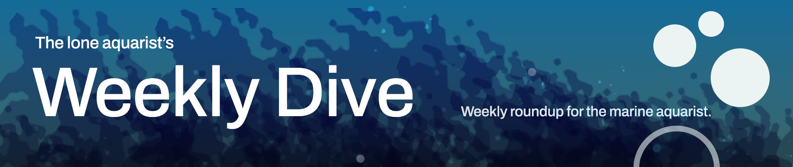

Saturday, August 15, 2026 · 24 items
Howdy, it's Isaac again.
Happy Saturday, reefing family, and welcome back to Weekly Dive.
Here are the biggest things worth knowing:
Let's dive into the news touching our hobby…
Ocean acidification alters competition between turf algae and corals, passively dissolving coral skeletons and shifting reef carbonate budgets. This mechanism explains how OA degrades reef structure beyond direct effects on coral calcification.
Global Change Biology Communications · Joshua M. Heitzman et al. · Aug 9 · doi.org
Research on coral holobionts exposed to combined thermal and nutrient stress shows stressor interactions severely reduce photosynthate transfer and cause bleaching. Understanding these combined stressors is critical for predicting reef responses to climate change and eutrophication.
Frontiers in Microbiology · Kiara Lange et al. · Aug 10 · doi.org
Study shows Pavona cactus corals shift their redox metabolism during aerial exposure and re-immersion, mimicking low-tide stress. Understanding intertidal coral physiology informs care of shallow-water species and stress responses.
Journal of Experimental Marine Biology and Ecology · Luiza de Castro Mastrangelo Dias et al. · Aug 13 · doi.org
A review of macroalgae ecological roles in Red Sea reefs as primary producers, habitat engineers, and food-web support. Understanding algal function and structure in reef systems informs stocking decisions and tank community composition.
Frontiers in Marine Science — Journal · Nahlah A. Alsuwaiyan · Aug 14 · frontiersin.org
Coral reef fish escape responses scale sharply with predator attack speed, and fish discriminate predation threats from harmless stimuli in real time. This reveals how prey fish physiology and behavior evolved to match ecological predation risk.
PLoS ONE · Sara Linde Neven et al. · Aug 12 · doi.org
Researchers investigated whether antioxidant-rich food webs can enhance coral resilience to thermal stress and bleaching. If validated, feeding corals' symbiotic algae or the coral animal itself with antioxidant sources could mitigate heat-induced oxidative damage.
Antioxidants · Juan José Dorantes‐Aranda et al. · Aug 11 · doi.org
New model predicts acidified bottom-water conditions months in advance on the Bering Sea Shelf. Acidification forecasting matters for understanding environmental stress on cold-water systems and wild reefs.
Ocean Acidification Research Center — Bluesky · Aug 13 · bsky.app
Post addresses treatment of brown jelly disease in corals. Brown jelly is a common coral disease in aquaculture; effective treatment guidance has direct husbandry application.
Reefs.com · Tidal Gardens · Aug 12 · reefs.com
Amino acid isotope analysis reveals that three nominally herbivorous reef fish species have different true nutritional sources and functional roles. This refines which fish actually perform algal removal and thus reef herbivory.
Coral Reefs · Joshua Pi et al. · Aug 11 · doi.org
Study of pelagic larval-duration evolution in reef-fish families reveals macroevolutionary patterns in early-life traits. Understanding larval ecology informs both wild recruitment and captive breeding prospects.
Belgian journal of zoology · Emmanuele Huet et al. · Aug 10 · doi.org
Study examines physiological stress responses of ascidians to ultrasound exposure at 30 kHz. Understanding impacts of underwater noise on sessile invertebrates has relevance to aquarium equipment and husbandry stress factors.
Frontiers in Marine Science — Journal · Francesca Cima · Aug 12 · frontiersin.org
Scripps researchers completed large-scale genetic census of California intertidal marine life. Intertidal biodiversity data contributes to understanding of shallow-water temperate marine ecology.
Scripps Institution of Oceanography — Bluesky · Aug 12 · bsky.app
Wildfire smoke affects local air quality and may alter reef-tank pH and CO₂ levels. Relevant to reef keeping but the mechanism and magnitude of effect are not explained.
5 min ReefDudes · ReefDudes · Aug 10 · youtube.com
DNA analysis reveals rapid evolutionary innovation in seahorse male pregnancy and brood-pouch development rather than gradual change. Seahorse reproduction biology is notable but tangential to reef-tank husbandry.
Project Seahorse — Bluesky · Aug 13 · bsky.app
Tour of established 10-foot SPS reef highlights flow management, ICP testing, trace-element tuning, and consistency over constant changes. Practical deep-dive into maintaining a mature high-demand system.
28 min World Wide Corals · World Wide Corals · Aug 13 · youtube.com
Genetic and morphological analysis resolves a century-old taxonomic debate, placing two reef-fish genera into separate new families. Clarified taxonomy improves species identification and understanding of reef-fish diversity.
Australian Society for Fish Biology — Bluesky · Aug 9 · bsky.app
New seahorse species discovered off Tamil Nadu named for seahorse conservationist. Species description notable but seahorse availability and care remain niche in the hobby.
+1 similar UBC Oceans — Bluesky · Aug 13 · bsky.app
Four bleaching events since 1997 have degraded Florida Keys reef-accretion rates and structure persistence, eroding reef-building capacity. Quantified loss of reef function from repeated thermal stress directly informs wild-reef trajectory and climate risk.
+1 similar Frontiers in Marine Science — Journal · Travis A. Courtney · Aug 13 · frontiersin.org
Review examines crown-of-thorns starfish as a major driver of ongoing reef degradation, compounding bleaching losses. CoTS irruptions and management responses are central to understanding wild reef decline and recovery prospects.
Coral Reefs · Morgan S. Pratchett et al. · Aug 12 · doi.org
Ocean Acidification Research Center recovered the M2 mooring in the Bering Sea, continuing seawater CO₂ monitoring for acidification trends. Real-time acidification data informs understanding of carbonate chemistry affecting coral calcification worldwide.
Ocean Acidification Research Center — Bluesky · Aug 14 · bsky.app
Study establishes baseline benthic biodiversity and structure of Groote Archipelago reefs following 2024 bleaching and cyclone damage. Managers need this local data to design effective, region-specific conservation and reef recovery strategies.
PLoS ONE · Dane P. G. Wattle et al. · Aug 12 · doi.org
El Niño in a warming climate will break global temperature records this year. Exceptional thermal stress compounds bleaching risk for wild reefs already stressed by warming.
Scripps Institution of Oceanography — Bluesky · Aug 13 · bsky.app
Study finds climate change accelerates invasive lionfish success in marine ecosystems. Lionfish invasion is a documented reef predator threat; understanding drivers of invasion helps reef conservation strategy.
UBC Oceans — Bluesky · Aug 12 · bsky.app
UAV multispectral imaging mapped coral distribution in a Vietnamese MPA with high resolution. Accurate reef mapping is essential for monitoring conservation areas and tracking ecosystem changes over time.
Sustainable Marine Structures · Nguyen Van Thao et al. · Aug 11 · doi.org